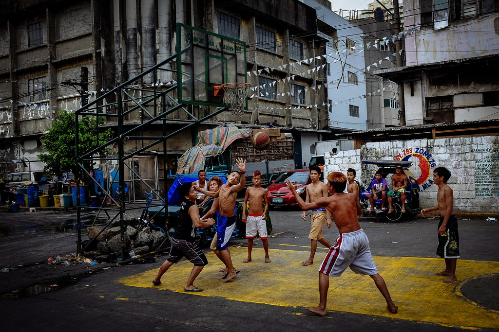
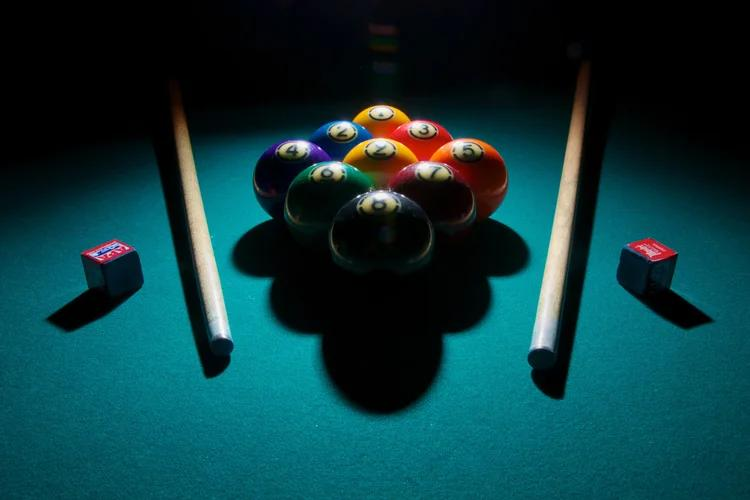

JOB / 01
Construction Laborer
Heavy work, hot days, honest pay. Construction taught him endurance, teamwork, and that a finished job is a promise you keep with your hands.
No diploma. No shortcuts. No one handed him a map. Kurt grew up poor in Mindanao, was raised by his grandparents, worked with his hands — then crossed an ocean in March 2022 and started building a new life in America, one skill at a time.
Kurt comes from Tagum City, in the province of Davao del Norte, on the island of Mindanao in the Philippines. He grew up poor, in a broken family, and was raised by his grandparents.
That start didn't give him much — but it gave him the two things he still runs on today: hard work, and the habit of figuring things out himself. When you don't have much, you learn how things work. You fix it, you build it, or you go without.
Raised by his grandparentsThe people who raised him in Tagum City while life was hard around him.
School stopped at Grade 10Grade 7–10 only. He did not finish high school and did not go through K-12. Everything after that, he taught himself.
Poor — but not stuckPoverty was the starting point, never the plan. Work started early, and it started with his hands.
Pick a chapter. This is the route from a construction site in the Philippines to a design desk in Las Vegas.
Kurt's first career wasn't on a screen. It was labor — real, physical, get-it-done work in the Philippines.
Heavy work, hot days, honest pay. Construction taught him endurance, teamwork, and that a finished job is a promise you keep with your hands.
Painting is detail work — prep, patience, clean lines. It's the first place his eye for finish and design quietly started training.

Putting events together meant people, timing, and problems solved on the spot. Organizing taught him how to run something from zero to done.
Work was only half the life. On the court and at the pool table, Kurt competed — and collected a lot of trophies doing it.
In the Philippines, basketball isn't a hobby — it's the neighborhood. Kurt played the street game the way it's played at home: tough, fast, and for pride. That competitive edge never left him; today he still runs with the LV Pinoy Ballers community in Las Vegas.

Billiards is geometry, patience, and nerve — reading angles three shots ahead. Kurt played seriously and won a lot of trophies across basketball and billiards. Same lesson in both: study the table, then commit to the shot.
Ask Kurt what his biggest problem is and he'll tell you straight: he's curious about everything — mostly computers and DIY stuff. That "problem" is also the reason a laborer became a web designer. Tap a topic and see where the curiosity went.
March 2022 changed the address. It didn't change the work ethic — it gave it new tools. In the US, Kurt kept hustling, kept studying, and turned years of self-teaching into a design career.
The designer other people ask for advice — clean, fast, modern websites built with a pro eye and a laborer's discipline for finishing.
His own web design studio — the business his curiosity built, at kmwebdesign.xyz.
Manager at Ravfia Strategic Operations LLC in Las Vegas — running field businesses with the same direction → coordination → delivery system he learned on job sites.
Talent is nice. Showing up every day is the actual system.
No diploma didn't mean no education. It meant self-education.
From a painted wall to a shipped website — done means done.
Computers, DIY, design, business — the questions never stop.
“I didn't finish school.
I never stopped learning.”
— THE KAMHYPE RULE